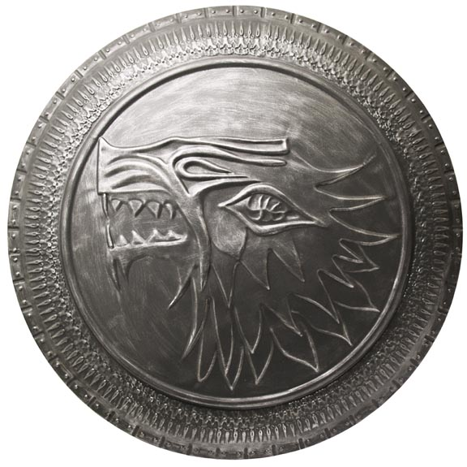

Shield
Brief History
House Stark of Winterfell is one of the Great Houses of Westeros and the principal noble house of the north. In days of old, they ruled as Kings of Winter. After Aegon's Conquest however, they have been Wardens of the North and ruled as Lords of Winterfell.
Their seat, Winterfell, is an ancient castle renowned for its strength.
Their sigil is a grey direwolf racing across a field of white. Their words are "Winter is Coming", one of only a few house mottoes to be a warning rather than a boast.
Aside from the Karstarks of Karhold, the Starks of Winterfell may have other, distant relatives in the north. White Harbor and Barrowton are considered to be likely options. Some younger Starks have also held vassal holdfasts for the lords of Winterfell.
Characters
-
Arya Stark